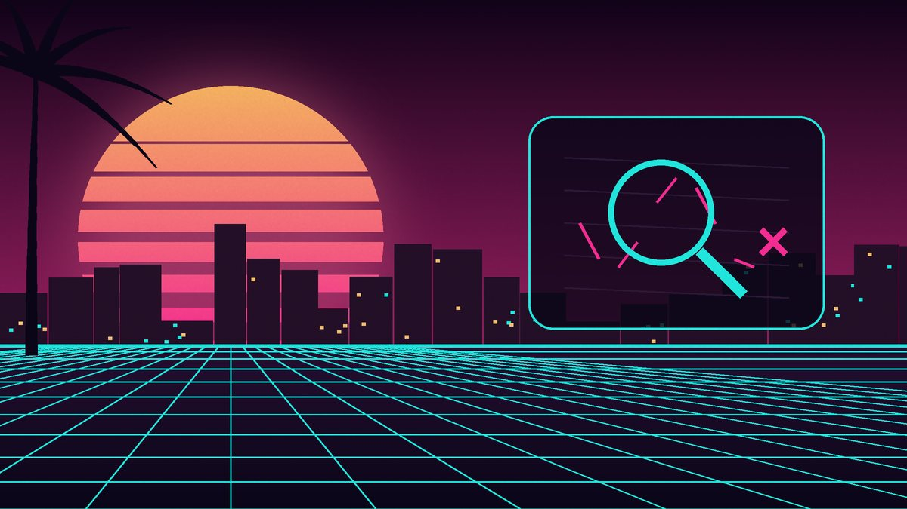

Un perro en jet-ski te rescata en alta mar y te lleva a una isla con 1.200 dólares
Si te quedas nadando lejos de la costa, aparece un perro con gafas de sol pilotando un jet-ski. Si te subes y aguantas hasta el final del viaje, acabas en una playa llena de perros y con una cartera enterrada. No hace falta ninguna misión.
Por Redacción Golpe Diario · Publicado el

Qué ha pasado
Las dos guías que dan una zona concreta apuntan a Gambit Bay, al oeste de Key Lento, donde arranca la partida: son Beebom y big-n.fr. Beebom añade que el Gulf of Leonida también vale y avisa de algo importante, que el perro no espera en un punto fijo del mapa. Journal du Geek describe otro camino: ir en barco hasta las aguas que rodean una isla pequeña al norte de la casa de Jason y nadar luego hacia el oeste, con el puente a la derecha de la pantalla y el dirigible a la izquierda.
Requisitos no hay. Beebom lo dice sin rodeos: no hace falta completar ninguna misión. Y big-n.fr recuerda que la barca amarrada en el muelle de la casa de Jason está disponible desde el prólogo, así que se puede intentar el primer día.
El paso que más se falla es el del principio. Hay que alejarse de toda costa, saltar al agua y seguir nadando para separarse del barco. Beebom insiste en nadar en dirección contraria a tierra y avisa de que el perro puede no salir a la primera; al cabo de unos minutos se oyen ladridos y aparece, con gafas de sol y chaleco salvavidas. Journal du Geek cuenta que el juego señala un ruido en los alrededores y que el ladrido se escucha con la concentración, algo que las otras dos guías no mencionan. Beebom es la única que da botones: mantener L2 o LT abre las opciones para saludarlo o preguntarle, y después te subes detrás.
Conduce él. Te lleva a una playa donde hay varios perros más, lo que los jugadores han bautizado como la isla de los perros. Y ahí es donde cada guía cuenta una cosa distinta. Journal du Geek dice que el perro te trae un balón de fútbol americano, que hay que lanzarlo lejos por encima de una barca volcada y seguirlo: te lleva hasta un cadáver que puedes registrar por 18 dólares y, al lado, desentierra una cartera con 1.200. Beebom lo cuenta sin cadáver, jugando con los juguetes o acariciando a los perros para subir la concentración hasta que uno de ellos acaba cavando la cartera, que trae «unos 1.200 dólares» y se recoge con Triángulo o Y. En cambio, big-n.fr habla de un cofre en la playa con una cartera de 1.218 dólares exactos, sin cavar nada.
Así que la cifra no está cerrada y conviene ir con la idea de unos 1.200 dólares, no con un número exacto. Lo que sí aporta Journal du Geek es un detalle que ahorra un viaje en balde: si llegas directamente en barco a esa playa sin haberte hecho amigo del perro, los perros están ahí, pero no cavan, y te quedas solo con el dinero del cadáver. Beebom añade que se puede repetir, aunque la isla no se puede marcar en el mapa, porque su posición sale al azar cuando el perro te recoge; para volver hay que provocar otra vez el rescate.
Del origen del guiño no hay nada oficial. Journal du Geek dice que para mucha gente es un homenaje a un perro real que se hizo viral en Florida acompañando a su dueño sobre el agua, y no da nombre. Big-n.fr va más lejos y habla de un golden retriever llamado Loosy y de una confirmación de Rockstar, pero no enseña la declaración ni enlaza a ella, así que de momento es una teoría. Rockstar no ha publicado nada sobre este secreto.
Qué significa para ti
- No necesitas avanzar en la historia. Con la barca del muelle de Jason, disponible desde el prólogo, ya puedes ir.
- El fallo típico es quedarse pegado al barco. Salta al agua, sigue nadando para separarte de él y de la costa, y espera. Puede no salir a la primera.
- Hazte amigo del perro antes de pisar la isla. Si llegas por tu cuenta en barco, los perros están, pero no desentierran la cartera.
- Cuenta con unos 1.200 dólares. Las tres guías dan cifras distintas, así que no hagas planes con un número exacto.
- Fíjate bien en la zona cuando llegues: la isla no se puede marcar en el mapa y para repetirlo hay que volver a provocar el rescate.
Lo tienes también en la guía: Cómo ganar dinero en GTA 6 · Vehículos en GTA 6: los mejores por tipo, los especiales y cómo guardarlos y mejorarlos · El mapa de Leonida zona a zona: qué hay en cada región y cuándo llegas · Secretos y easter eggs de GTA 6: dónde están y cómo llegar
Contrastado con: Journal du Geek · Beebom · big-n.fr
Sigue leyendo
Los cuatro carteles de Peewees: dónde están y qué ropa gratis dan al escanearlos todos
Hay cuatro vallas publicitarias de la cadena de pollo frito Peewees repartidas por Leonida que solo sirven para algo si las escaneas con el móvil. Encontrarlas las cuatro desbloquea un regalo en la tienda de Belville.
WAiNK: la categoría de coleccionables que esconde 31 puntos de interés y un trofeo por hacerte con el 100 % de GTA 6
GTA 6 reparte landmarks, curiosidades y esculturas por todo el mapa para que los escanees con el móvil de Jason o Lucía. Esta es la cuenta real de cuántos hay y qué trofeo consigues si los juntas con el resto de coleccionables.
El Thrax, el premio final de la lista de coches de Randy en GTA 6, está en una isla que no sale en el mapa
Randy pide 22 coches para su colección particular, y el último, un Thrax, lo guarda en una isla a la que solo se llega en ferri y que el juego no te señala.